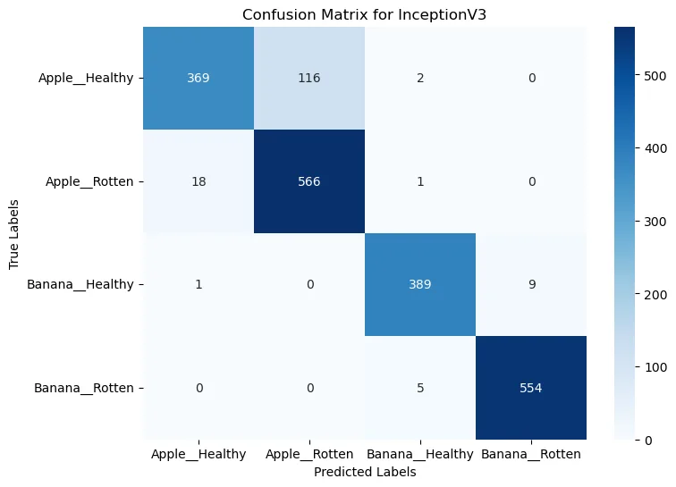
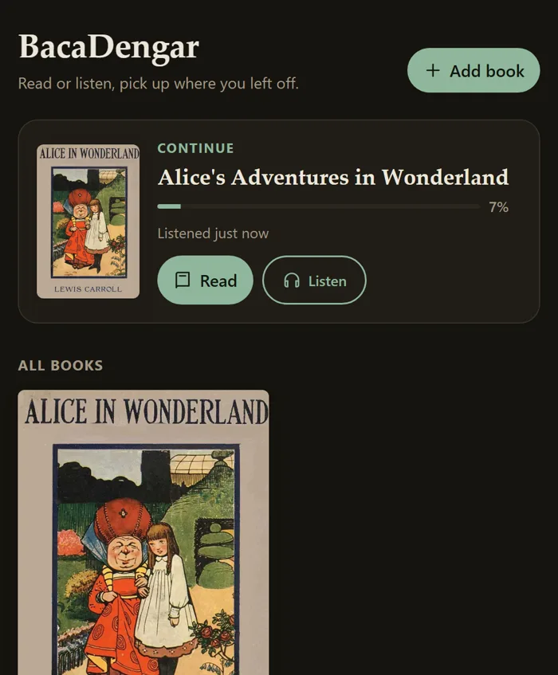
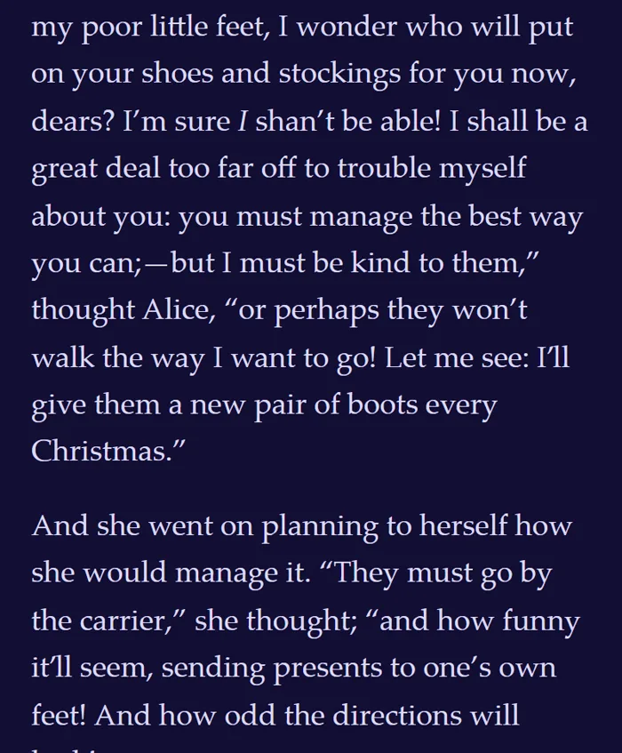
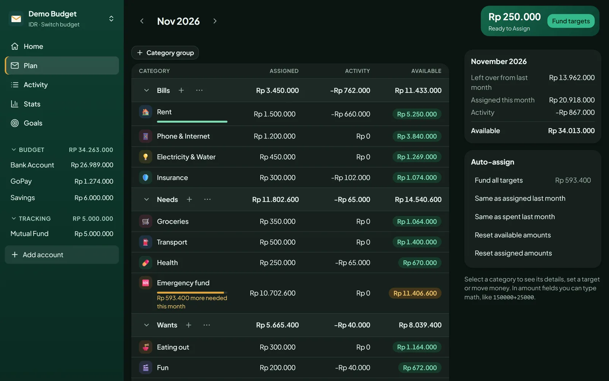
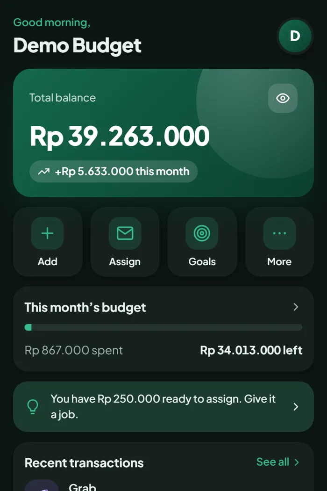
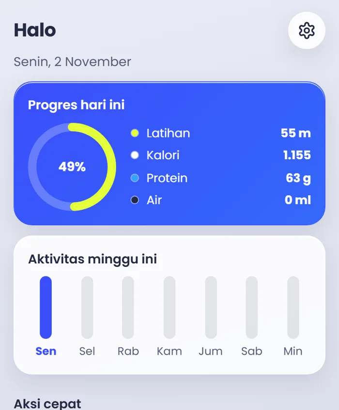
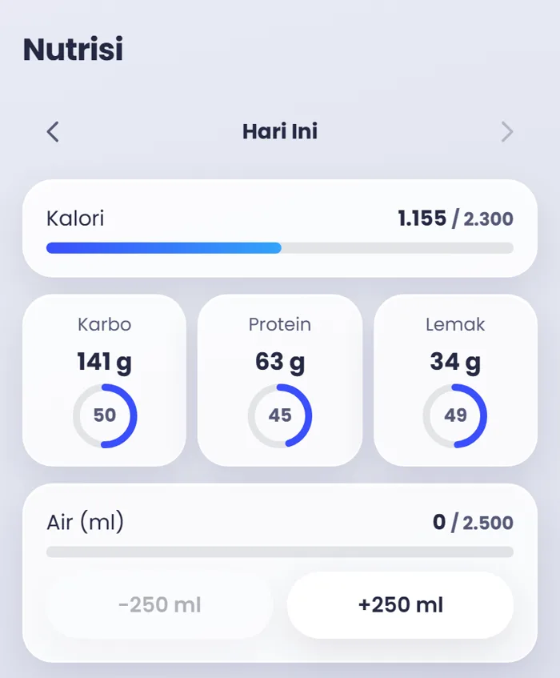

M.Si. in Computational Science
Institut Teknologi Bandung · March 2026
GPA 3.98/4.00. Final project: cardiovascular disease classification using hybrid deep learning on ECG images.
ML / Research
I build software people can run themselves, and teach machines to see.
M.Si. Computational Science, ITB
I'm a Master's graduate from Institut Teknologi Bandung working across machine learning and full-stack development, from deep learning research on ECG images to apps I run on my own server.
Deep learning research on medical and food images, plus speech and text alignment inside real apps.
Assisting ML and AI courses, delivering lectures, mentoring project groups and publishing research.
React and TypeScript front ends, Node.js or FastAPI back ends, packaged with Docker to run on my own server.
Institut Teknologi Bandung · March 2026
GPA 3.98/4.00. Final project: cardiovascular disease classification using hybrid deep learning on ECG images.
Gunadarma University · August 2023
GPA 3.78/4.00. Final project: transfer learning with VGG16 and VGG19 for brain tumor classification from MRI images.
Proceeding: Impact of Preprocessing Techniques on Cardiovascular Disease Prediction Using Electrocardiogram Images.
Institut Teknologi Bandung
Graded and supervised exams, delivered Neural Network lectures, and guided 15 students across 4 groups through their final ML projects over 2 semesters.
Universitas Gunadarma
Helped deliver a 14-week AI and Data Science course to 500+ students across 4 faculties, covering ML fundamentals, data preprocessing and model evaluation.
FMIPA, Institut Teknologi Bandung
Scraped and classified 5,000+ research titles from 200+ lecturers by Scopus and Sinta rankings, and coordinated 200+ participants for the Peneliti Belia Jawa Barat event.
7th ITB International Graduate School Conference
Led a 3-person team, produced all visual assets, and automated certificates and emails for 150+ participants, including international attendees.
Pengabdian Masyarakat
Led documentation and publication and designed all visuals for a program training elementary school science teachers.
Independent research comparing three pre-trained CNNs at telling fresh apples and bananas from rotten ones, using 10,159 images across four classes.
Accuracy on 2,030 validation images. The best model was also tried on images from outside the dataset.

Python · TensorFlow · Keras · Transfer learning


Read the ebook, listen to the audiobook, and pick up exactly where you left off in either. The name is Indonesian for "read-listen".
Python · FastAPI · faster-whisper · ffmpeg · React · TypeScript · Docker


A self-hosted envelope budgeting app: give every rupiah a job before you spend it. It installs on a phone and keeps all its data in a single SQLite file.
React · TypeScript · Node.js · Express · SQLite · Docker


A personal gym log for workouts, programs, progress and nutrition. The name is Indonesian for "lift". It's an installable phone app that keeps working with no connection.
React · TypeScript · IndexedDB · Node.js · Express · SQLite · Gemini API · Docker
A step-by-step implementation of the perceptron, the most basic neural network, covering weight updates and a plotted decision boundary.
Python · NumPy · Matplotlib · Jupyter
I enjoy work where research, teaching and building meet. At ITB I focused on deep learning for medical images and helped students through their own ML projects. Outside research I build my own tools: a budget app, an audiobook reader and a gym log.
I'm looking for a lecturer or research role, or a position in data science and machine learning. Email is the best way to reach me.
fayahmad07@gmail.com